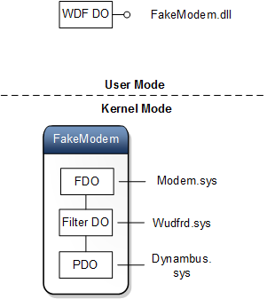

This sample demonstrates these two serial drivers:
- A simple virtual serial driver (ComPort)
- A controller-less modem driver (FakeModem).This driver supports sending and receiving AT commands using the ReadFile and WriteFile calls or via a TAPI interface using an application such as, HyperTerminal.
This sample driver is a minimal driver meant to demonstrate the usage of the User-Mode Driver Framework. It is not intended for use in a production environment.
For more information, see Serial Controller and Device Drivers in the WDK documentation.
Note
To build this sample, you can use Microsoft Visual Studio 2013 (Express, Professional, or Ultimate) and Windows Driver Kit (WDK) 8.1 Update. You can get Visual Studio 2013 and WDK 8.1 Update here.
You can also build this sample with Visual Studio 2013 (Professional or Ultimate) and Windows Driver Kit (WDK) 8.1.
For Windows Driver Kit (WDK) 8 samples, download the WDK 8 samples pack. The samples in the WDK 8 samples pack will build only with Microsoft Visual Studio Professional 2012 (Professional or Ultimate) and WDK 8.
Related technologies
User-Mode Driver FrameworkOperating system requirements
| Client | |
|---|---|
| Server |
Build the sample
You can build the sample in two ways: using Microsoft Visual Studio or the command line (MSBuild).
Download and extract the sample
Click the download button on this page. Click Save, and then click Open Folder. Right click Virtual serial driver sample.zip, and choose Extract All. Specify or browse to a folder for the extracted files. For example, you could extract to c:\VirtualSerialDriverSample.
Open the driver solution in Visual Studio
Navigate to the folder that has the extracted sample. Double click the solution file, VirtualSerial.sln. In Microsoft Visual Studio, locate Solution Explorer. (If this is not already open, choose Solution Explorer from the View menu.) In Solution Explorer, you can see one solution that has two driver projects named ComPort and FakeModem and a package project named package (lower case).
Set the configuration and platform in Visual Studio
In Visual Studio, in Solution Explorer, right click Solution ‘VirtualSerial’ (3 projects), and choose Configuration Manager. Set the configuration and the platform. Make sure that the configuration and platform are the same for both the driver project and the package project. Do not check the Deploy boxes. Here are some examples of configuration and platform settings.
| Configuration | Platform | Description |
|---|---|---|
| Win8.1 Debug | x64 | The driver will run on an x64 hardware platform that is running Windows 8.1. The driver will not run on any earlier versions of Windows. |
| Win7 Debug | x64 | The driver will run on an x64 hardware platform that is running Windows 7 or a later version of Windows. |
Build the sample using Visual Studio
In Visual Studio, on the Build menu, choose Build Solution.
For more information about using Visual Studio to build a driver package, see Building a Driver.
Locate the built driver package
In File Explorer, navigate to the folder that contains your built driver package. The location of this folder varies depending on what you set for configuration and platform. For example, if your settings are Win7 Debug and x64, the package is in your solution folder under x64\Win7Debug\Package.
The package contains these files:
| File | Description |
|---|---|
| fakemodem.dll | The driver file for the modem. |
| fakemodem.inf | An information (INF) file that contains information needed to install the driver for the modem. |
| virtualserial.dll | The driver file for the virtual serial port. |
| virtualserial.dll | An INF file that contains information needed to install the driver as a root enumerated software driver for the virtual serial port. |
| WdfCoinstaller010xx.dll | The coinstaller for version 1.xx of KMDF. |
| wudf.cat | A signed catalog file, which serves as the signature for the entire package. |
Run the sample
The computer where you install the driver is called the target computer or the test computer. Typically this is a separate computer from where you develop and build the driver package. The computer where you develop and build the driver is called the host computer.
The process of moving the driver package to the target computer and installing the driver is called deploying the driver. You can deploy the UMDF Driver Skeleton Sample automatically or manually.
Installing the VirtualSerial driver
Before you automatically deploy a driver, you must provision the target computer. For instructions, see Configuring a Computer for Driver Deployment, Testing, and Debugging.
- On the host computer, in Visual Studio, in Solution Explorer, right click package (lower case), and choose Properties. Navigate to Configuration Properties > Driver Install > Deployment.
- Check Enable deployment, and check Remove previous driver versions before deployment. For Target Computer Name, select the name of a target computer that you provisioned previously. Select Hardware ID Driver Update, and enter UMDF\VirtualSerial Note that regardless of the hardware ID specified here, both drivers are deployed but only the specified device is installed on the target computer. Click OK.
- On the Build menu, choose Deploy Package or Build Solution.
On the target computer, in a Command Prompt window, enter devmgmt to open Device Manager. In Device Manager, on the View menu, choose Devices by type. In the device tree, locate Microsoft VirtualSerial User-Mode Device Sample (COMn) under the Ports (COM &LPT) node.
Installing the FakeModem driver
Before you automatically deploy a driver, you must provision the target computer. For instructions, see Configuring a Computer for Driver Deployment, Testing, and Debugging.
- Install the toaster bus driver (dynambus.sys). Information on how to install the toaster bus driver, see Toaster.
- On the target computer, open a Command Prompt window and enter dvmgmt to open Device Manager.
- In Device Manager, make sure that the Toaster Dynamic Bus Enumerator node appears under System Devices.
- Copy notify.exe (general\toaster\exe\notify) to the target computer and run the application as administrator.
- Choose Bus > Plugin.
- In the Plug in Device dialog, specify Serial Number as 1 and Device Id as {b85b7c50-6a01-11d2-b841-00c04fad5171}\fakemodem.
- Click OK to start device enumeration.
- In Device Manager, on the View menu, choose Devices by connection. Locate Toaster Dynamic Bus Enumerator. Notice that the child of the node. That node is the raw PDO for the fake modem device.
- On the host computer, in Visual Studio, in Solution Explorer, right click package (lower case), and choose Properties. Navigate to Configuration Properties > Driver Install > Deployment.
- Check Enable deployment, and check Remove previous driver versions before deployment. For Target Computer Name, select the name of a target computer that you provisioned previously. Select Hardware ID Driver Update, and enter {b85b7c50-6a01-11d2-b841-00c04fad5171}\fakemodem. Click OK.
On the target computer, in Device Manager, on the View menu, choose Devices by type. In the device tree, locate Microsoft Fake Modem User-Mode Device Sample #2 under the Modem node.
On the View menu, choose Devices by connection. Locate Microsoft Fake Modem User-Mode Device Sample #2 as a child of Toaster Dynamic Bus Enumerator.
The bus driver, in this case the Toaster Dynamic Bus driver, creates a PDO for the specified hardware ID. At this time, you can view the PDO in Device Manager. It appears as a child node under the bus driver node. No driver is associated with this child device object. In the registry you can see the settings associated with it under the HKEY_LOCAL_MACHINE\SYSTEM\CurrentControlSet\Enum\{b85b7c50-6a01-11d2-b841-00c04fad5171}\<instance>.
To install the driver, you must specify the driver install package. Visual Studio builds the package and then deploys it to the target computer, where it's stored under C:\DriverTest\Driver. For the Fake Modem device, its INF specifies the device class as Modem and Modem.sys as the function driver. The INF also specifies the Reflector driver (Wudfrd.sys) as a lower device filter driver. The kernel mode device stack is as follows:

In the user-mode stack, FakeModem.dll is loaded as the device driver. When an application that wants to communicate with the device initiates requests, the I/O Manager creates the neccassary IRP and passes it to the reflector. The reflector reroutes the request back to device driver in user mode. That driver either handles the request or sends it to the kernel-mode driver, Modem.sys.
Testing the sample
To test the virtual serial driver, first install the device as described in the preceding section. Then, you can communicate with the driver by opening a handle to the appropriate COM port and calling ReadFile or WriteFile functions. Alternatively, you can communicate with the serial driver by running HyperTerminal (hypertrm.exe). The AT command set supported by virtual serial includes:
| AT | returns OK |
| ATA | returns CONNECT |
| ATD<number> | returns CONNECT |
Code tour
| File manifest | Description |
|---|---|
| comsup.cpp & comsup.h | COM Support code - specifically base classes which provide implementations for the standard COM interfaces
IUnknown and IClassFactory which are used throughout the sample.
The implementation of IClassFactory is designed to create instances of the CMyDriver class. If you should change the name of your base driver class, you would also need to modify this file. |
| dllsup.cpp | DLL Support code - provides the DLL's entry point as well as the single required export (DllGetClassObject).
These depend on comsup.cpp to perform the necessary class creation. |
| exports.def | This file lists the functions that the driver DLL exports. |
| internal.h | This is the main header file for the sample driver. |
| driver.cpp & driver.h | Definition and implementation of the driver callback class (CMyDriver) for the sample. This includes DriverEntry and events on the framework driver object. |
| device.cpp & driver.h | Definition and implementation of the device callback class (CMyDriver) for the sample. This includes events on the framework device object. |
| queue.cpp & queue.h | Definition and implementation of the base queue callback class (CMyQueue). This includes events on the framework I/O queue object. |
| VirtualSerial.rc /FakeModem.rc | This file defines resource information for the sample driver. |
| VirtualSerial.inf / FakeModem.inf | INF file that contains installation information for this driver. |